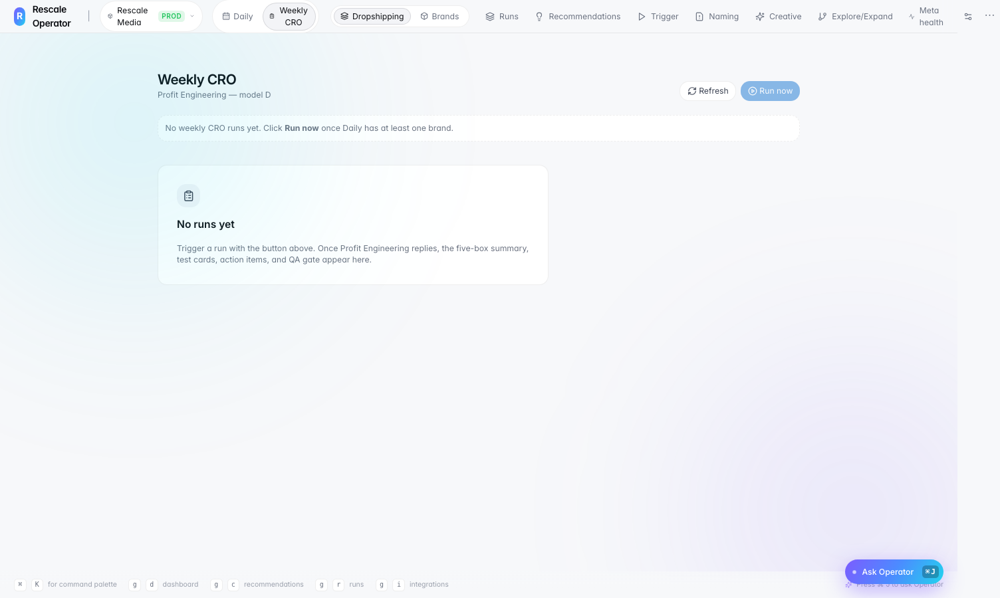

What shipped
orchestrators/weekly_cro.py,
persistence/weekly_cro.py, API integration per Profit
Engineering plan, and frontend weekly CRO home.
Rescale Operator — shipped
Weekly CRO orchestrator, Profit Engineering integration hooks, dedicated
dashboard route at /weekly-cro/d, and persistence layer
for weekly checkpoint workflows.
orchestrators/weekly_cro.py,
persistence/weekly_cro.py, API integration per Profit
Engineering plan, and frontend weekly CRO home.
Extends the same hybrid agency model — deterministic checks plus agentic synthesis — on a weekly cadence for CRO and profit review.

Profit Engineering weekly checkpoint dashboard.